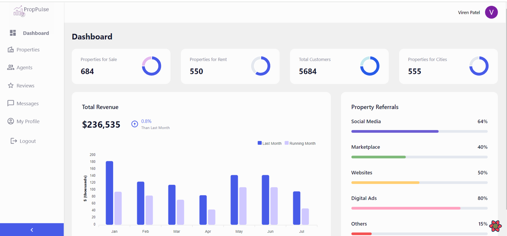
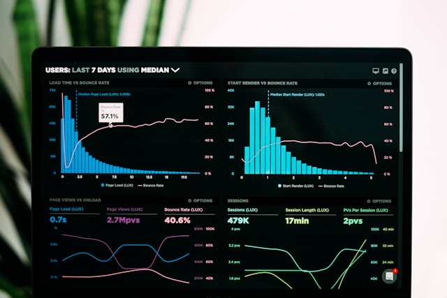

I am a passionate software enthusiast with a strong penchant for exploring and mastering new technologies.
With a background in Computer Engineering, I am currently pursuing my Masters in Computer Science.
Throughout my academic journey, I have taken on diverse projects in Software Engineering, Data Analytics, Operating Systems, Machine Learning, and Artificial Intelligence, honing my skills and knowledge in these areas.
These experiences have shaped me into a versatile and skilled professional, fueled by a curiosity for learning new technologies and making a commitment to deliver impactful solutions.
I am a professional Table Tennis athelete and have being playing the sport at a competitve level since 10 years. I was the first student from Texas A&M University, Corpus Christi to qualify for the Inter-Collegiate USA Table Tennis Nationals.
Position: System Engineer
Location: Pune, India
Date: 08/2021 - 07/2022
• Built and maintained scalable Python and Spring Boot applications, optimizing CRM queries for a 25% response
time reduction.
• Delivered projects on time and budget using Agile methodologies, collaborating effectively across teams for
feature implementation, troubleshooting, and code reviews.
• Ensured high code quality and knowledge transfer through well-documented codebases.
Technology used: AEM, Java and Software Development Lifecycle
Position: ServiceNow Junior Developer
Location: Corpus Christi, Texas, USA
Date: 01/2023 - Present
• Increased self-service adoption by 25% through streamlined catalog item design, reducing customer support
tickets and improving resolution times.
• Boosted first-call resolution by optimizing incident forms and crafting clear, efficient Glide scripts, empowering
agents to resolve issues faster.
• Automated key workflows, saving 15% of IT team time, by implementing robust business rules and client scripts,
freeing up valuable resources for strategic initiatives.
Technology used: ServiceNow and Javascript

PropPulse is an all-in-one real estate management suite. With PropPulse, we can
track property analytics effortlessly with a visualisation dashboard. Enjoy complete CRUD functionalities, secure
authentication, and advanced data management features. Say hello to automated insights
and optimized investments. Upgrade your property management experience with
PropPulse.
Technology used: MERN stack Development

In this project, I gathered weather data for a specific location and then predicted the maximum temperature
of the next day using various regression models. I evaluated the performance of each model and concluded which model had
the best results.
Technology used: Python its libraries Numpy, Pandas, Matplotlib and Seaborn.
I developed a distributed chat application to implement the distributed features of communication, fault tolerance
and scalability of a distributed system. This chat application can run on various servers and perform one to one
as well as group chat communications.
Technology used: Html, Css, Nodejs, Javascript, Redis and Haproxy

I have built a driver drowsiness detection system that captures the live face of the driver using a webcam and alerts him by playing an alarm if the driver is drowsy.
Technology used: Python, OpenCV and Image processing techniques

I developed a system that implements Naive Bayes classifier from scratch without using any pre-existing
libraries. It handles both continuous and discrete data.
Technology used: Python
In this project I have designed a system that solves the famous Sudoku puzzle using the
concept of Genetic algorithms.
Technology used: Python and its libraries Numpy, Pandas and Random.
I developed a Library Management System that efficiently manages the operations and resources of a library.
Technology used: Java and SQL.